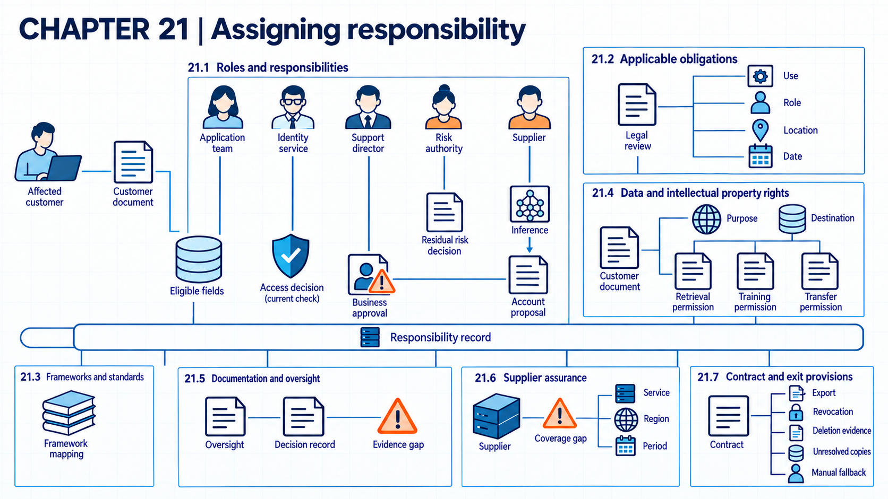

21 Responsibility and legal duties
A responsibility map assigns decisions and evidence across developers, providers, deployers, data owners, purchasers, and affected people.
An AI deployment joins decisions made by a model supplier, an application team, people who authorize data use, and a business that relies on the output. A responsibility map records which act each party performs, what it may decide, and which evidence it must provide. That map supports approval and review before an incident occurs. The Air Canada chatbot decision below illustrates how a legal duty can remain with an organization when software supplies the answer.
Suppose an organization buys model access and builds an application around it. The application connects internal data and serves employees or customers. Several parties can affect the same outcome, but their authority and duties differ. Responsibility follows who performs each act and who has authority over it. Legal and contractual duties depend on use, location, role, and date.

21.1 Responsibility for AI decisions
On February 14, 2024, British Columbia’s Civil Resolution Tribunal held Air Canada liable for misleading bereavement-fare information its chatbot gave, in Moffatt v. Air Canada, 2024 BCCRT 1491. The damages were small, about CAD 650. The decision is not binding precedent elsewhere. For this dispute, the company was responsible for the misleading information on which its customer relied. Responsibility for an AI output depends on which party performs each action.
Responsibility becomes unclear when a project calls every outside party a vendor and every internal party an owner. The analysis begins with the act each party performs. Under the EU AI Act2, a provider develops or has an AI system or general-purpose AI model developed and places it on the market, or puts an AI system into service, under its own name or trademark, whether paid or free of charge. A deployer uses an AI system under its authority, excluding personal, non-professional use. Article 2 includes providers supplying the EU market, deployers located in the EU, and providers or deployers outside the EU when their system’s output is used in the EU. Location outside the EU therefore does not by itself remove the use from the Act’s scope.
The EU AI Act’s Article 25(1)3 identifies three changes that make a distributor, importer, deployer, or other third party the provider of a high-risk system. A party can put its own name or trademark on an existing high-risk system, subject to the provision’s reservation for contractual allocation of obligations. It can substantially modify an existing high-risk system that remains high-risk. Or it can change the intended purpose of an existing system that was not classified as high-risk so that it becomes high-risk. A substantial modification is a change after market placement or entry into service that was not foreseen or planned in the provider’s initial conformity assessment and affects compliance with the high-risk requirements or changes the assessed intended purpose. The role change depends on these conditions, the Act’s scope, and the applicable date. The project responsibility map then connects that legal role to the internal and external parties performing each act.
The map links each lifecycle decision to authority, evidence, and escalation. An external supplier may operate inference. The internal application team selects the data and grants connector access. An internal business owner decides if an output affects a customer. The map also names people with no operating role. An affected person is a person whose rights, safety, access, or interests may be affected. Risk decisions still have to consider that person. The role map shows which obligations need examination next.
Example
Responsibility trace. In the example organization’s employee assistant, the external supplier operates model inference, and the internal application team selects retrieved fields. The internal identity service checks the employee’s access. The internal support director decides whether a proposed account change can enter the business process. The internal Chief Security Officer accepts the specified residual security risk. The intermediate record links each act to one responsible role and one evidence source. A supplier report cannot approve the organization’s connector permissions. A technical test cannot replace the authorized business-risk decision. Responsibility follows the act and authority, not a general label applied to the whole system.
A decision workflow keeps the map in force. Before approval, it checks that each consequential act has one responsible role, stated authority, evidence source, escalation route, and review date. It holds approval when a field is missing or conflicting. The measure is complete assignments divided by all consequential acts in the system map. A complete assignment shows who must decide, not that the decision is correct. Informal decisions outside the workflow can bypass it. When that happens, the unsupported decision is withdrawn and escalated to a role with authority. Maintaining the map and resolving conflicts take staff time.
21.2 Legal duties in context
Italy’s data protection authority, the Garante4, restricted ChatGPT in 2023 and fined OpenAI EUR 15 million in December 2024. In a March 20, 2026 report, ANSA5 said that the Rome court had annulled the fine. That report attributes the ruling to which EU authority should lead the case under the one-stop-shop rule for companies operating in several EU countries. The Garante’s own updated notice records that judgment No. 4153/2026, published on March 18, 2026, upheld the appeal against its decision. The March 20 date is the news report’s date. The full judgment and its reasoning were not reviewed here. This sequence shows why a legal record must distinguish the original measure, a later ruling, and the date of the source used.
The same technical system can face different duties when its use, location, operator, or date changes. A jurisdiction is a legal territory whose rules may apply. Within one jurisdiction, dates matter too. An application date is the date from which a particular provision applies. A law can enter into force earlier while transitional rules postpone some duties. Entry into force and application therefore need separate dates in the legal record (EU AI Act, Article 1136).
The Digital Omnibus on AI, Regulation (EU) 2026/17447, was published on July 24, 2026 and entered into force on July 27. It is an adopted amending law. The resulting AI Act Article 1138 retains August 2, 2026 as the general application date. It delays Chapter III Sections 1, 2, and 3, except Article 6(5), to December 2, 2027 for systems classified as high-risk under Article 6(2) and Annex III, and to August 2, 2028 for those under Article 6(1) and Annex I. These sections cover classification, system requirements, and provider and deployer duties. Other provisions follow their own dates. For example, Article 86’s explanation right is in Chapter IX and is outside that Chapter III delay.
Article 1119 adds transition rules for systems already on the market or in service. For the high-risk systems covered by paragraph 2, the Act applies after the relevant Chapter III date only if their designs undergo significant changes from that date. Providers and deployers of such systems intended for public authorities must in any case take the necessary steps to comply by August 2, 2030. Paragraph 1 separately covers specified large-scale IT systems, and the prohibitions in Article 5 remain protected. A review therefore needs the provision, system category, first market or service date, and later design changes, as well as the jurisdiction and role.
The United States health setting gives a second example. In its August 7, 2026 review, the Department of Health and Human Services10 distinguished the HIPAA Security Rule currently in effect from proposed cybersecurity changes. This is dated regulator guidance about an existing rule and a proposal. The proposal’s requirements cannot be treated as binding duties on that basis.
These examples show the process rather than a global legal survey. A final decision needs current primary law and qualified interpretation for the organization’s actual locations and sector. Once binding duties and contract terms are identified, voluntary frameworks can organize the remaining work without being mistaken for law.
Example
Scope trace. Whether a rule applies depends on its legal scope, the set of facts that brings a person, organization, system, or act under a rule. The organization records operating location, user location, affected person, intended use, and decision date. It links those facts to the responsibility map for the relevant legal role, the candidate system classification and provision, the first market or service date, and relevant later design changes. Unknown facts remain unresolved. A credit-scoring use and an internal alert-triage use share a model supplier but have different intended purposes. The internal legal reviewer checks the current provision, its application date, and any transition conditions against those linked facts for each use. The intermediate record marks the credit use for provision-level analysis. It leaves the alert-triage use outside that specific classification, pending other duties. The observed result is a scoped question. It does not classify the model in general.
Dated scope gate. The legal reviewer checks the complete linked scope record against current primary text and records the provision, date, reviewer, and unresolved facts. The reviewer then allows the use, allows it with limits, or postpones it. Missing role, classification, or transition facts prevent a final conclusion where the applicable rule depends on them. Coverage is reviewed obligations divided by all candidate obligations identified for the use. The record supports compliance only for its facts, law, and date. A stale summary, changed use, or missing location can invalidate it. Recovery then pauses the affected function and keeps the prior permitted path, and the internal owner repeats the legal review with current facts. Qualified review, updates, and supplier fact gathering are ongoing costs.
21.3 Frameworks versus compliance evidence
An organization can map its work to a well-known framework or standard and still leave a legal duty unmet. A framework organizes outcomes or practices used to structure risk work without specifying one way to carry them out. CSF 2.011 presents a technology-neutral hierarchy of cybersecurity outcomes and states that it does not prescribe how organizations achieve them. It can connect risk work across teams, but it is not an AI control catalogue and does not demonstrate control quality.
A management system is a connected set of policies, roles, processes, and reviews used to meet organizational objectives. The public ISO page12 describes ISO/IEC 42001 as requirements for establishing, implementing, maintaining, and continually improving an AI management system. Clause-level claims require the licensed normative text, so the public page supports only this scope description.
An organization may use a crosswalk, a scoped mapping between related items in different sources. It records the relationship and the gap instead of treating differently scoped documents as interchangeable.
Example
Crosswalk comparison. The organization starts with the concrete decision “Who can expand the assistant to customer data?” CSF 2.0 supplies outcomes for responsibility, supplier risk, and access control. The AI Risk Management Framework supplies AI context, measurement, and risk-management questions. ISO/IEC 42001 supplies management-system requirements only to the extent available in the licensed text. The intermediate crosswalk records the relevant item, the system evidence, and any uncovered question. The observed gap is the actual legal basis for customer-data use. No framework row fills that gap. A crosswalk organizes evidence, but it does not turn guidance into law.
For each selected framework or standard item, the reviewer records the relevant system evidence and any gap in scope in the review register. A framework row cannot close a legal or technical question that its source does not answer. Coverage is supported mappings divided by all mappings used in the decision. Even full coverage shows organized evidence, not control effectiveness or legal compliance. Broad labels and copied mappings can hide a gap, and a found gap reopens the affected decision until the missing source or test is obtained. Building and maintaining the register costs review time.
21.4 Rights to use data
Data can be technically accessible while still being unavailable for collection, training, retrieval, or reuse. Collection permission is the legal, contractual, or organizational basis for obtaining data.
NIST13 recommends categorizing generative AI content by third-party rights and setting policies for how third-party intellectual property and training data are used, stored, and protected. This guidance identifies governance work. It does not decide ownership, infringement, fair use, database rights, trade secrets, privacy duties, or license enforcement.
The example organization may have permission to store a customer document for service delivery but no permission to use it for model training. A reuse right permits use of material for a later purpose, and storage for service does not imply one. Retrieval for an authorized employee may also differ from disclosure to an external model supplier. The difference matters most for confidential information, which is information protected from unauthorized disclosure by duty or agreement. Current jurisdiction-specific primary law and qualified interpretation remain necessary for substantive legal conclusions. The permissions and restrictions determine which decision and change records need to remain available.
Permission control. The internal data gateway checks the data class, person or service identity, intended purpose, destination, retention rule, and recorded permission before collection, retrieval, training, or external transfer. It allows the operation, removes fields, or blocks it, and logs the basis. Tests report allowed and denied flows over all purpose-destination cases. A technical denial does not settle the underlying legal interpretation, so rights questions still go to qualified review. Copied data, wrong labels, or supplier reuse outside the observed interface can defeat the gateway. Recovery revokes access and removes affected copies where possible. Classification and legal review add cost.
21.5 Decision records
A responsible role cannot review a system if the reason for a decision disappeared with a meeting. A decision record captures the options, evidence, responsible role, date, conditions, and unresolved issues behind a decision. Related records describe the system, tests, oversight authority, access, incidents, and changes.
The AI Risk Management Framework14 connects system context, intended purpose, task, legal risk, human oversight, testing, and lifecycle decisions across its MAP, MEASURE, and MANAGE functions. For covered high-risk systems, EU AI Act Articles 11-14 and 1615 require providers to ensure technical documentation, automatic logging capability, instructions for deployers, and a design that permits effective human oversight. Article 26 separately requires deployers to assign oversight and monitor operation. It also requires them to retain logs under their control for an appropriate period of at least six months, unless applicable EU or national law provides otherwise. Specific financial-sector provisions address monitoring and log keeping. These duties depend on legal scope, classification, transition rules, and the Chapter III application dates described above. The sources do not establish one record format or retention period for every AI system.
The documentation set follows the system boundary. It links versions and decisions without claiming that the record itself proves the system is safe. A human oversight assignment identifies the person or role with review and intervention authority. A change record preserves evidence of a system change and its assessment. These records supply the questions and evidence requests used in supplier assurance.
Example
Decision-record test. The example organization’s model version changes on October 4. The prior internal record approved version V7 for policy summaries with read-only retrieval. The change record identifies version V8, the external supplier notice, affected tests, responsible internal reviewer, and the decision to hold expansion. The team can trace each test result back to V7 or V8. If the record contained only “model updated,” a later reviewer could not tell which evidence remained relevant. The reviewer checks whether the documentation supports a decision, not whether a form was completed.
The internal release workflow uses these records as a gate. It checks the system version, affected assumptions, required tests, oversight assignment, and approval before routing users to the change. It then releases the change, releases it with restrictions, or keeps the accepted version. The measure is fully linked material changes divided by all detected material changes. An emergency change or silent external supplier update can bypass the workflow. Complete documentation still cannot show that every failure was detected. Recovery restores the accepted configuration and rebuilds missing records from internal logs and supplier notices. Version tracking and review delay delivery.
21.6 Interpreting supplier assurance
A certificate or audit title can appear relevant while covering the wrong service, location, control period, or customer configuration. Assurance scope identifies the systems, services, locations, controls, and period covered by evidence. A subprocessor processes data on behalf of another processor in the supplier chain. A service dependency that does not process the data still needs review, but it need not have that legal role. The review also records exclusions, shared responsibilities, and customer actions required for the assurance to apply.
CSF 2.016 calls for coordination of supplier roles and inclusion of security requirements in contracts. It also calls for due diligence before a relationship and risk monitoring during it. NIST17 also recommends contract clauses that permit evaluation of third-party generative AI processes and standards. A service-specific review still needs to establish the audit quality and the relevance of supplier controls to the organization’s system.
No strong public source cited here describes the detailed scope and customer-control sections of common assurance reports. The internal review therefore compares the assurance scope with the actual data flow and service configuration, then lists every uncovered dependency. Those gaps become contract and exit requirements.
Example
Supplier-scope comparison. The external supplier’s report covers inference service S1 in region R1 for January through June. The organization uses S1 in region R2 from August and supplies its own internal connector. The internal reviewer records the service, region, period, supplier control, and customer control in the comparison. The observed gaps are region R2, the later operating period, and the customer connector. The report may still provide useful evidence for covered controls, but it cannot support a conclusion about the uncovered configuration. The responsible internal role requests current evidence and records the connector as an organization duty.
Assurance control. The internal procurement gate compares service, region, period, configuration, subprocessors, supplier controls, and customer duties with the actual deployment. It accepts the evidence, accepts it with a condition, or leaves the related use unapproved. Coverage is matched scope items divided by all scope items required for the decision. A matched report supports only its stated scope, not the security of the whole application. A stale report or an omitted customer control can give false assurance. Recovery restricts the service, disables the uncovered path, and can move work to the approved fallback. Obtaining and reviewing evidence adds supplier and internal cost.
21.7 Portability and supplier exit
Dependence becomes difficult to change after data, connectors, workflows, and staff practices build up around one service. Portability is the ability to move data, configurations, and necessary artifacts to another service.
NIST18 recommends reviewing AI supplier contracts for termination, responsibility, incident notice, response times, support availability, and service levels. CSF 2.019 includes supplier participation in incident activity and risk management after a service agreement ends. These are governance outcomes. Contract language and enforceability require separate legal work. Two kinds of term matter most at exit. Termination assistance is supplier support for an orderly end or transfer. A continuity term is a contract condition intended to preserve essential operations during disruption or exit.
Suppose the organization rehearses supplier exit in an isolated copy of the assistant, using test records and credentials. It first exports the permitted records and tests the fallback: an employee must retrieve an authorized support policy and complete a support case without the supplier model or connector. Assume that case completes and its record is retained. The rehearsal then removes the test connector access, revokes its test credentials, checks their rejection, and repeats the support case through the fallback. A failed fallback check holds the live exit decision. Production access has not been withdrawn by this rehearsal. For an approved live exit, work moves to the verified fallback before the essential supplier path is withdrawn. Retention obligations and deletion evidence are checked separately. Jurisdiction-specific clauses and published evidence on practical exit testing remain open research needs. The resulting responsibility, supplier, and continuity record provides the input for security investment decisions in Chapter 22 (Prioritizing security investment).
The exit workflow checks required data, configurations, logs, open cases, credentials, supplier deletion evidence, and fallback readiness. The responsible role completes exit only when mandatory transfer, retention, revocation, and continuity conditions are met. Recording an item as unresolved makes the gap visible but does not satisfy a mandatory condition. Any conditionally accepted gap needs explicit authority and a follow-up date. Measures include recovered required items over all required items and revoked credentials over all active credentials. A supplier deletion statement does not by itself prove removal from every copy. Proprietary formats, supplier delay, or a shared dependency can block exit. Recovery keeps the manual path active and limits new data while unresolved items are escalated. Portability tests, standby service, and supplier support add ongoing cost.
Note
Chapter checkpoint. A supplier operates inference, the organization selects customer data, and an internal support director approves account changes. Assign responsibility for model service operation, retrieval eligibility, and the final account decision. State one evidence item and one limit for each assignment.
Answer. The external supplier is responsible for the contracted operation of the model service, supported by service records and limited to the contract and assurance scope. The internal organization role that controls retrieval is responsible for eligible customer fields, supported by permission and retrieval tests and limited by current law and data rights. The internal support director is responsible for the account decision under the organization’s authority, supported by approval and action logs and limited by the director’s approval range. Each assignment remains limited to its stated act and authority.
British Columbia Civil Resolution Tribunal, Moffatt v. Air Canada, 2024 BCCRT 149 (February 14, 2024), source. A small-claims tribunal decision with low damages does not bind courts in other places or settle how other laws treat AI answers.↩︎
European Parliament and Council, Regulation (EU) 2024/1689 (Artificial Intelligence Act), OJ L, 2024/1689 (July 12, 2024), consolidated text of July 27, 2026, Articles 2(1), 3(3), 3(4), and 3(8), current text, as amended by Regulation (EU) 2026/1744, OJ L, 2026/1744 (July 24, 2026). The consolidation is a documentation tool. The published Official Journal acts control.↩︎
European Parliament and Council, Regulation (EU) 2024/1689 (Artificial Intelligence Act), OJ L, 2024/1689 (July 12, 2024), consolidated text of July 27, 2026, Articles 3(23) and 25(1)(a)-(c), read with Articles 2, 6, 111, and 113, current text, as amended by Regulation (EU) 2026/1744, OJ L, 2026/1744 (July 24, 2026). The consolidation is a documentation tool. The published Official Journal acts control.↩︎
Garante per la protezione dei dati personali, “ChatGPT, il Garante privacy chiude l’istruttoria. OpenAI dovrà realizzare una campagna informativa di sei mesi e pagare una sanzione di 15 milioni di euro,” press release (December 2024), source. The notice records that Rome court judgment No. 4153/2026, published March 18, 2026, upheld the appeal and that the authority temporarily removed decision No. 755 from its website. This confirms a later court development, but the judgment’s full reasoning was not inspected.↩︎
ANSA, “Tribunale Roma annulla multa da 15 milioni di euro del Garante Privacy a OpenAI,” ANSA (March 20, 2026), source. This is a news report of the ruling, not the ruling itself, and the court’s full reasoning was not reviewed.↩︎
European Parliament and Council, Regulation (EU) 2024/1689 (Artificial Intelligence Act), OJ L, 2024/1689 (July 12, 2024), consolidated text of July 27, 2026, Articles 111 and 113, especially Article 113, third paragraph, point (c), current text, as amended by Regulation (EU) 2026/1744, OJ L, 2026/1744 (July 24, 2026). The consolidation is a documentation tool. The published Official Journal acts control.↩︎
European Parliament and Council, Regulation (EU) 2026/1744 of July 8, 2026 (Digital Omnibus on AI), OJ L, 2026/1744 (July 24, 2026), Article 1(39)-(40) and Article 4, published act. Article 4 provides entry into force on the third day after publication, July 27, 2026.↩︎
European Parliament and Council, Regulation (EU) 2024/1689 (Artificial Intelligence Act), OJ L, 2024/1689 (July 12, 2024), consolidated text of July 27, 2026, Articles 111 and 113, especially Article 113, third paragraph, point (c), current text, as amended by Regulation (EU) 2026/1744, OJ L, 2026/1744 (July 24, 2026). The consolidation is a documentation tool. The published Official Journal acts control.↩︎
European Parliament and Council, Regulation (EU) 2024/1689 (Artificial Intelligence Act), OJ L, 2024/1689 (July 12, 2024), consolidated text of July 27, 2026, Articles 111 and 113, especially Article 113, third paragraph, point (c), current text, as amended by Regulation (EU) 2026/1744, OJ L, 2026/1744 (July 24, 2026). The consolidation is a documentation tool. The published Official Journal acts control.↩︎
U.S. Department of Health and Human Services, Summary of the HIPAA Security Rule, reviewed August 7, 2026, “Introduction” and the opening note about the current rule and proposed rule, source.↩︎
Cherilyn Pascoe, Stephen Quinn, and Karen Scarfone, The NIST Cybersecurity Framework (CSF) 2.0, NIST CSWP 29 (2024), Abstract and sections 1–2, printed pp. 1–5, and Appendix A, source.↩︎
ISO and IEC, ISO/IEC 42001:2023, Information technology - Artificial intelligence - Management system, first edition (2023), public ISO overview, “What is ISO/IEC 42001?” and “What is an artificial intelligence management system?,” source. Only the public scope description was checked. The licensed normative clauses were not inspected.↩︎
NIST, Artificial Intelligence Risk Management Framework: Generative Artificial Intelligence Profile, NIST AI 600-1 (2024), GOVERN 6.1, action GV-6.1-001, printed p. 20, and MAP 4.1, action MP-4.1-006, p. 26, source.↩︎
Elham Tabassi, Artificial Intelligence Risk Management Framework (AI RMF 1.0), NIST AI 100-1 (2023), Tables 2–4: MAP 1.6 and 2.1, printed p. 26. MAP 3.5 and 4.1, p. 27. MEASURE 2.5 and 2.7, pp. 29–30. MANAGE 2.4, p. 32, source.↩︎
European Parliament and Council, Regulation (EU) 2024/1689 (Artificial Intelligence Act), OJ L, 2024/1689 (July 12, 2024), consolidated text of July 27, 2026, Articles 11-14, 16(a), and 26(2), (5), and (6), read with Articles 2, 6, 111, and 113, current text, as amended by Regulation (EU) 2026/1744, OJ L, 2026/1744 (July 24, 2026). The consolidation is a documentation tool. The published Official Journal acts control.↩︎
Cherilyn Pascoe, Stephen Quinn, and Karen Scarfone, The NIST Cybersecurity Framework (CSF) 2.0, NIST CSWP 29 (2024), Appendix A, GV.SC-02 and GV.SC-05 through GV.SC-09, printed pp. 17–18, source.↩︎
NIST, Artificial Intelligence Risk Management Framework: Generative Artificial Intelligence Profile, NIST AI 600-1 (2024), GOVERN 6.1, action GV-6.1-006, printed p. 21, source.↩︎
NIST, Artificial Intelligence Risk Management Framework: Generative Artificial Intelligence Profile, NIST AI 600-1 (2024), GOVERN 6.2, action GV-6.2-007, printed p. 22, source.↩︎
Cherilyn Pascoe, Stephen Quinn, and Karen Scarfone, The NIST Cybersecurity Framework (CSF) 2.0, NIST CSWP 29 (2024), Appendix A, GV.SC-08 and GV.SC-10, printed p. 18, source.↩︎